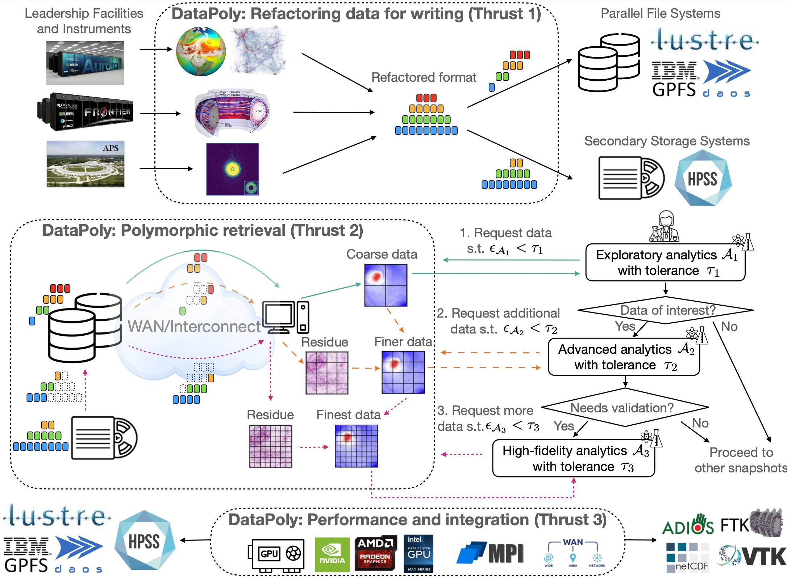
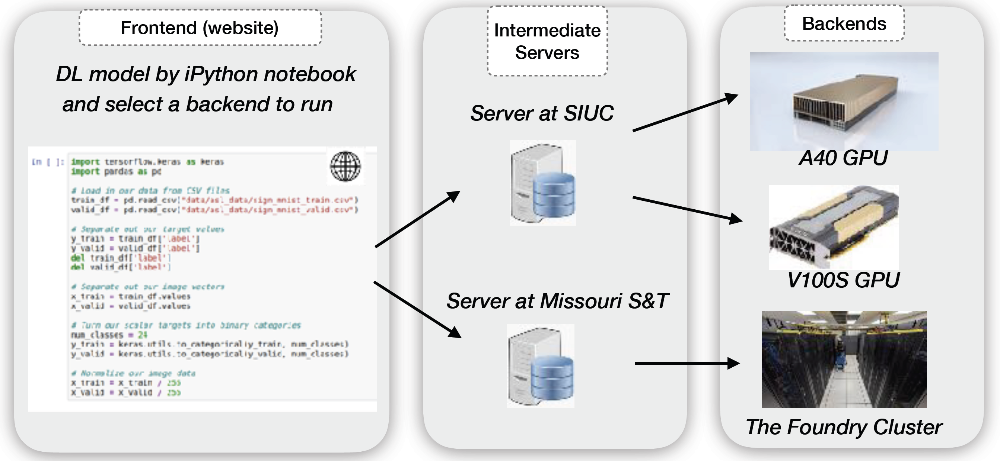
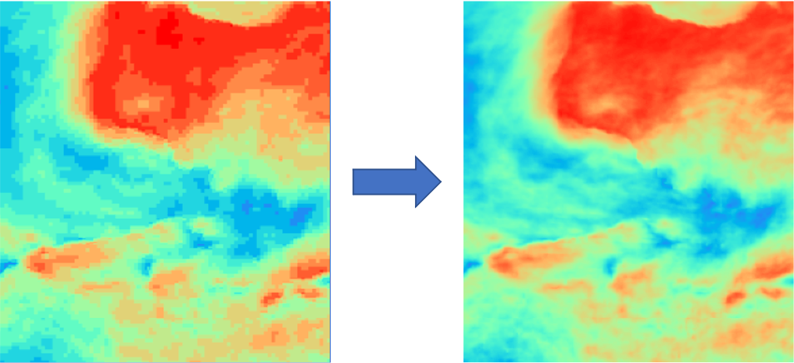
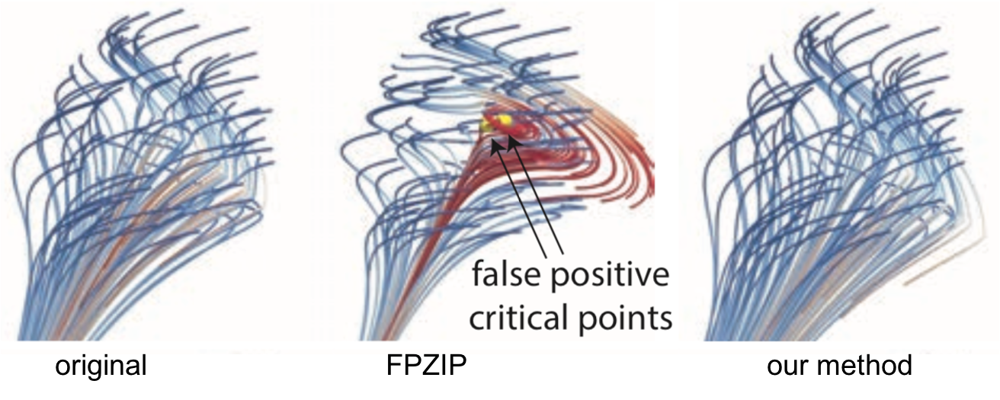
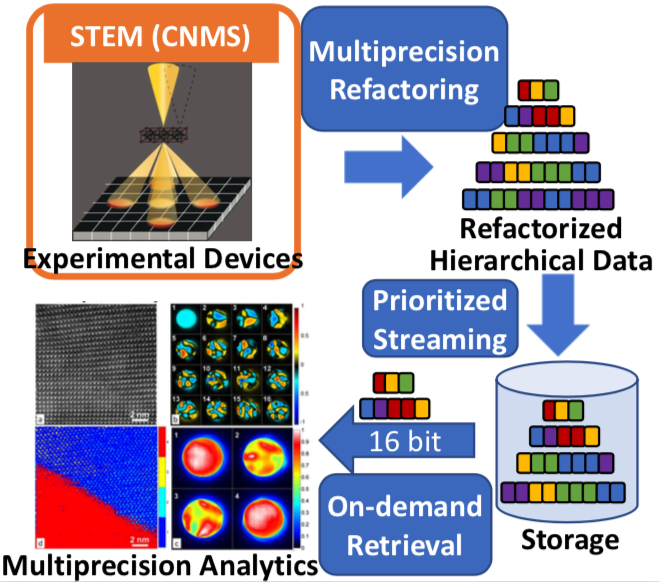

Projects
- CAREER: Data Polymorphism: Enabling Fast and Adaptable Scientific Data Retrieval with Progressive Representations
- Role: PI
- Lead PI: Xin Liang
- Sponsor: NSF
- Amount: $500K
- Period: 07/2025 - 06/2030
- Project description: Scientific simulations and instruments are producing an unprecedented amount of data that overwhelms the network and storage systems. These data have to be stored at remote sites or moved to secondary storage for archival purposes due to the limited capacity in high end parallel file systems. This poses grand challenges to fetching the data for post hoc data analytics, as the data movement bandwidth across wide area networks or from secondary systems is very limited. This project bridges this gap by developing scalable software to realize data polymorphism, a novel paradigm that allows for variable representations of the same data under different scenarios and use cases, to enable on demand data provision with reduced data movement cost. The success of this project is expected to significantly reduce the time needed to gain scientific insights from data for a wide range of applications, thus advancing scientific discoveries in domains including climatology, cosmology, fusion energy science, and ptychography. This contributes to resolving a wide range of important societal problems, including weather forecasting, galaxy surveys, electric generation, and material design. Furthermore, an integrated education program is developed for workforce development and broadening participation in advanced cyberinfrastructure.
 RII Track-4: NSF: Scalable MPI with Adaptive Compression for GPU-based Computing Systems
RII Track-4: NSF: Scalable MPI with Adaptive Compression for GPU-based Computing Systems
- Role: PI
- Lead PI: Xin Liang
- Sponsor: NSF
- Amount: $280K
- Period: 02/2024 - 01/2026
- Project description: This Research Infrastructure Improvement Track-4 EPSCoR Research Fellows project will provide a fellowship to an Assistant professor and training for a graduate student at the University of Kentucky Research Foundation. This work will be conducted in collaboration with researchers at the Argonne National Laboratory (ANL). Message Passing Interface (MPI) is the de facto standard to perform communication and scale applications on high-performance computing systems. The performance of MPI is crucial to various downstream applications, including scientific simulations, big data analytics, and artificial intelligence. However, as the recent development of GPUs continues to outpace that of commodity networks, large-size data transfer is becoming the major performance bottleneck in state-of-the-art MPI libraries. This work aims to tackle this problem by developing a performant and scalable MPI library through integrated data compression, which is critical to fully exploit the power of current and next-generation computing systems. The success of this project will allow for accelerated executions of scientific code and data analytics, reducing the time to scientific insights for applications running on large-scale GPU-based computing systems. This will help advance scientific discoveries across a wide range of computer and computational disciplines. The deliverables of this project will be made publicly accessible to the community to enhance the research and engineering cyberinfrastructure in broader domains. In addition, this project will contribute to the education and workforce development for advanced cyberinfrastructure through the training of graduate students.
 Collaborative Research: OAC Core: Topology-Aware Data Compression for Scientific Analysis and Visualization
Collaborative Research: OAC Core: Topology-Aware Data Compression for Scientific Analysis and Visualization
- Role: PI
- Lead PI: Xin Liang
- Sponsor: NSF
- Amount: $600K (my share: $200K)
- Period: 09/2023 - 08/2026
- Project description: Today's large-scale simulations are producing vast amounts of data that are revolutionizing scientific thinking and practices. For instance, a fusion simulation can produce 200 petabytes of data in a single run, while a climate simulation can generate 260 terabytes of data every 16 seconds with a 1 square kilometer resolution. As the disparity between data generation rates and available I/O bandwidths continues to grow, data storage and movement are becoming significant bottlenecks for extreme-scale scientific simulations in terms of in situ and post hoc analysis and visualization. The disparity necessitates data compression, which compresses large-scale simulations data in situ, and decompresses data in situ and/or post hoc for analysis and exploration. On the other hand, a critical step in extracting insight from large-scale simulations involves the definition, extraction, and evaluation of features of interest. Topological data analysis has provided powerful tools to capture features from scientific data in turbulent combustion, astronomy, climate science, computational physics and chemistry, and ecology. While lossy compression is leveraged to address the big data challenges, most existing lossy compressors are agnostic of and thus fail to preserve topological features that are essential to scientific discoveries. This project aims to research and develop advanced lossy compression techniques and software that preserve topological features in data for in situ and post hoc analysis and visualization at extreme scales. The success of this project will promote scientific research on driving applications in cosmology, climate, and fusion by enabling efficient and effective compression for scientific data, and the impact scales to other science and engineering disciplines. Furthermore, the research products of this project will be integrated into visualization and parallel processing curricula, disseminated via research and training workshops, and used to attract underrepresented students for broadening participation in computing.
 Collaborative Research: Elements: ProDM: Developing A Unified Progressive Data Management Library for Exascale Computational Science
Collaborative Research: Elements: ProDM: Developing A Unified Progressive Data Management Library for Exascale Computational Science
- Role: PI
- Lead PI: Xin Liang
- Sponsor: NSF
- Amount: $600K (my share: $240K)
- Period: 08/2023 - 07/2026
- Project description: Effective management of scientific data produced by extreme-scale simulations and instruments is crucial for advancing scientific discoveries. Due to the scale of data and the diverse requirements of scientific analytics, there is a growing need to manage data in a progressive manner, such that users can stream as much data as they need to carry out their data analytics with reduced data movement and computation. However, little effort has been put into creating robust and scalable cyberinfrastructure services that link the recent algorithmic innovations in progressive methods with scientific data analytics, leaving these capabilities inaccessible to scientists. This project aims to develop a sustainable framework ProDM that supports the progressive management of scientific data to facilitate its use in scientific applications. The success of this project will enable new scientific research and novel findings by providing a new way to manage and analyze data. Furthermore, outcomes of this project will be delivered as publicly available software to enhance research cyberinfrastructure, promote education and teaching, and broaden participation in computing.
- Collaborative Research: CyberTraining: Pilot: Research Workforce Development for Deep Learning Systems in Advanced GPU Cyberinfrastructure
- Role: Site PI
- Lead PI: Tong Shu
- Sponsor: NSF
- Amount: $300K (my share: $98K)
- Period: 11/2022 - 09/2025
- With the recent advancements in artificial intelligence, deep learning systems and applications have become a driving force in multiple transdisciplinary domains. While this evolution has been largely supported by the rapid improvements in advanced GPU cyberinfrastructure, comprehensive training materials are generally absent that combine application-driven deep learning techniques with the implementation of such techniques using the GPU cyberinfrastructure. To fill in this gap, this project develops an online workshop that comprises of a set of interdisciplinary cutting-edge training sessions offered by six faculty members from five disciplines. With a focus on the latest innovations in GPU-based deep learning systems and applications, this workshop fosters a community of the next-generation cyberinfrastructure users and contributors, who can use, develop, and improve advanced GPU cyberinfrastructure for their deep learning research. Such training efforts enhance the knowledge of the deep learning and GPU cyberinfrastructure workforce, and subsequently contribute to the solutions of important scientific and societal problems, including hydrographic mapping in geography, space environment nowcasting in aerospace, and autonomous driving and traffic monitoring in transportation. The workshop will also attract trainees from underrepresented groups, including minority students and researchers from rural areas.
- Improving Quality of Lossy Compression by Feature Regeneration
- Role: PI
- Lead PI: Xin Liang
- Sponsor: ANL
- Amount: $231K
- Period: 10/2022 - 09/2025
- Project description: This project will focus on improving the compression quality of scientific lossy data compressors by exploring intelligent methods and parameter optimization strategies to regenerate feature and mitigate artifacts. The goal is to i) study new techniques to regenerate features and/or mitigate artifacts for scientific lossy data compressors; ii) integrate the methods to improve the compression quality of SZ using parameter optimizations; iii) evaluate and optimize the framework with ECP applications.
- CRII: OAC: Enabling Quantities-of-Interest Error Control for Trust-Driven Lossy Compression
- Role: PI
- Lead PI: Xin Liang
- Sponsor: NSF
- Amount: $175K
- Period: 06/2022 - 03/2025
- Scientific simulations and instruments are producing data at volumes and velocities that overwhelm network and storage systems. Although error-controlled lossy compressors have been employed to mitigate these data issues, many scientists still feel reluctant to adopt them because these compressors provide no guarantee on the accuracy of downstream analysis results derived from raw data. This project aims to fill this gap by developing a trust-driven lossy data compression infrastructure capable of strictly controlling the errors in downstream analysis theoretically and practically to facilitate the use of data reduction in scientific applications. Success of this project will promote the progress of science in multiple disciplines via effective data reduction, and contribute to resolving important societal problems including electric generation, weather forecasting, material design, and transportation. Moreover, this project will contribute to the growth and development of future generations of scientists and engineers through educational and engagement activities, including development of new curriculum and recruitment of K-12 students.
- ESAMR: Enabling Scalable Analytics using Multi-precision Refactoring
- Role: PI
- Lead PI: Xin Liang
- Sponsor: ORNL DRD
- Amount: $640K
- Period: 10/2020 - 09/2022
- Project description: The overarching goal of this project is to create a framework to enable efficient data streaming from edge devices, on-demand data retrieval from storage systems, and progressive, scalable data analytics on edge and high-performance computing (HPC) platforms. To achieve this goal, our multiprecision refactoring framework will refactor scientific data in a progressive fashion based on importance, and will be optimized on ORNL’s accelerated nodes. The framework will offer on-demand accuracy to minimize data movement, and time spent in analysis algorithms on edge and HPC resources. Although this is a general framework, we will validate its effectiveness on CNMS data generated from the scanning transmission electron microscopy and DCA++ simulation data generated on Summit. Upon success, it can be utilized at other ORNL facilities such as SNS, HFIR, and OLCF. The progressive data representation defined in this project (i.e., the refactored data) is complementary to other important ORNL initiatives such as the Federated Instrument Initiative and the Scalable Data Infrastructure for Science Initiative and can be integrated in edge systems and distributed storage infrastructures to allow for efficient and scalable data collection, storage, and sharing.
- Sirius-2: Science-driven Data Management for Multitier Storage 2.0
- Role: Senior Personnel
- Lead PI: Scott Klasky (ORNL)
- Sponsor: DOE ASCR
- Amount: $500K/year
- Period: 10/2020 - 09/2025
- Project description: The Sirius 2 project will create the capability to enable progressive analysis. To accomplish this, we will build upon our approach that created the MultiGrid Adaptive Reduction of Data (MGARD) framework, which was a novel approach to create a hierarchy of grids to represent the original data, and then compress the grids in the hierarchy. In this project, we will map the refactored data across a multitier storage system according to the information content. This mapping will allow for both in situ and post-processing analysis methods to progressively retrieve with increasing accuracy.
 RAPIDS-2: A SciDAC Institute for Computer Science, Data, and Artifical Intelligence
RAPIDS-2: A SciDAC Institute for Computer Science, Data, and Artifical Intelligence
- Role: Senior Personnel
- Lead PI: Robert Ross (ANL)
- Sponsor: DOE ASCR
- Amount: $5.75M/year
- Period: 10/2020 - 09/2025
- Project description: The Department of Energy (DOE) has led the world in enabling large-scale high-performance computing as an indispensable tool for scientific discovery in a broad range of disciplines. Our newest generation of systems is not simply larger than past systems – it brings distinct and novel challenges. These challenges arise from the deepening of the memory hierarchy and inclusion of fast, nonvolatile storage within the HPC system; the widening ratio of peak FLOPS to I/O bandwidth; and the increasing ubiquity of computation accelerators. Moreover, the breadth of science performed on DOE advanced computing resources is growing and new motifs of investigation are emerging, including those involving experimental and observational data and artificial intelligence (AI). To address these challenges, we propose the RAPIDS2 SciDAC Institute for Computer Science, Data, and Artificial Intelligence.
 CODAR: Co-design Center for Online Data Analysis and Redcution at the Exascale
CODAR: Co-design Center for Online Data Analysis and Redcution at the Exascale
- Role: Researcher
- Lead PI: Ian Foster (ANL)
- Sponsor: DOE ECP
- Amount: $4M/year
- Period: 10/2016 - 09/2023
- Project description: By 2024, computers are expected to compute at 1018 operations per second but write to disk only at 1012 bytes/sec: a compute-to-output ratio 200 times worse than on the first petascale systems. In this new world, applications must increasingly perform online data analysis and reduction tasks that introduce algorithmic, implementation, and programming model challenges that are unfamiliar to many scientists and that have major implications for the design of various elements of exascale systems. The goal of the Center for Online Data Analysis and Reduction at the Exascale (CODAR) is to produce infrastructure for online data analysis and reduction; provide valuable abstractions for implementing and customizing data analysis and reduction methods; import, integrate, and develop essential libraries implemented using these abstractions; incorporate the libraries into scientific applications and quantify accuracy and performance; release software artifacts; construct application-oriented case studies; document success stories and the process applied to obtain them; and report on codesign trade-off investigations.
- ADIOS: Providing A Framework For Scientific Data On Exascale Systems
- Role: Researcher
- Lead PI: Scott Klasky (ORNL)
- Sponsor: DOE ECP
- Amount: $1.5M/year
- Period: 10/2016 - 09/2023
- Project description: Exascale architectures will have complex, heterogeneous memory hierarchies, ranging from node-level caches and main memory all the way to persistent storage via the file system, that applications need to effectively achieve their science goals. At the same time, exascale applications are becoming more complex in their data flows, from multiscale and multiphysics simulations that need to exchange data between separate codes to simulations that invoke data analysis and visualization services to extract information and render it to storing simulation output to the file system for later analysis. The ADIOS project delivers a highly optimized coupling infrastructure that enables efficient synchronous and asynchronous data exchanges to move data between multiple codes running concurrently and to the different layers of the storage system.
- SZ: Fast, Effective, Parallel Error-bounded Exascale Lossy Compression For Scientific Data
- Role: Research Intern
- Lead PI: Franck Cappello (ANL)
- Sponsor: DOE ECP
- Period: 10/2016 - 09/2023
- Abstract: Long-running large-scale simulations and high-resolution, high-frequency instrument detectors are generating extremely large volumes of data at a high rate. While reliable scientific computing is routinely achieved at small scale, it becomes remarkably difficult at exascale due to both an increased number of disruptions as the machines become larger and more complex from, for example, component failures and the big data challenge. The VeloC/SZ project addresses these challenges by focusing on ensuring high reliability for long-running exascale simulations and reducing the data while keeping important scientific outcomes intact.
Publications (with my students underlined)
Refereed Conference Publications
IPDPS'25
Xuan Wu, Sheng Di, Congrong Ren, Pu Jiao, Mingze Xia, Cheng Wang, Hanqi Guo, Xin Liang*, Franck Cappello.
Enabling Efficient Error-controlled Lossy Compression for Unstructured Scientific Data.
Proceedings of the 39th IEEE International Parallel & Distributed Processing Symposium, Milan, Italy, June 3 - June 7, 2025. (*: Corresponding authors)
IPDPS'25
Pu Jiao, Sheng Di, Mingze Xia, Xuan Wu, Jinyang Liu, Xin Liang*, Franck Cappello.
Improving the Efficiency of Interpolation-Based Scientific Data Compressors with Adaptive Quantization Index Prediction.
Proceedings of the 39th IEEE International Parallel & Distributed Processing Symposium, Milan, Italy, June 3 - June 7, 2025. (*: Corresponding authors) Nominated for the Best Paper Award.
IPDPS'25
Jieyang Chen, Qian Gong, Xin Liang, Qing Liu, Lipeng Wan, Yanliang Li, Norbert Podhorszki, Scott Klasky.
HPDR: High-Performance Portable Scientific Data Reduction Framework.
Proceedings of the 39th IEEE International Parallel & Distributed Processing Symposium, Milan, Italy, June 3 - June 7, 2025.
SC'24
Xuan Wu, Qian Gong, Jieyang Chen, Qing Liu, Norbert Podhorszki, Xin Liang*, and Scott Klasky.
Error-controlled Progressive Retrieval of Scientific Data under Derivable Quantities of Interest.
Proceedings of the 36th ACM/IEEE International Conference for High Performance Computing, Networking, Storage and Analysis, Atlanta, GA, USA, Nov 17 - 22, 2024. (*: Corresponding authors)
SC'24
Jiajun Huang, Sheng Di, Xiaodong Yu, Yujia Zhai, Jinyang Liu, Zizhe Jian, Xin Liang, Kai Zhao, Xiaoyi Lu, Zizhong Chen, and Franck Cappello.
hZCC: Accelerating Collective Communication with Co-designed Operation-supported Compression.
Proceedings of the 36th ACM/IEEE International Conference for High Performance Computing, Networking, Storage and Analysis, Atlanta, GA, USA, Nov 17 - 22, 2024.
VIS'24
Yuxiao Li, Xin Liang, Bei Wang, Yongfeng Qiu, Lin Yan, and Hanqi Guo.
MSz: An Efficient Parallel Algorithm for Correcting Morse-Smale Segmentations in Error-Bounded Lossy Compressors.
Proceedings of the 2024 IEEE VIS Conference, Melbourne, Australia, Oct 22 - 27, 2024.
EuroVis'24
Congrong Ren, Xin Liang, and Hanqi Guo.
A Prediction-Traversal Approach for Compressing Scientific Data on Unstructured Meshes with Bounded Error.
Proceedings of 26th EG Conference on Visualization, Odense, Denmark, May 27 - May 31, 2024.
IPDPS'24
Zizhe Jian, Sheng Di, Jinyang Liu, Kai Zhao, Xin Liang, Haiying Xu, Robert Underwood, Shixun Wu, Jiajun Huang, Zizhong Chen, Franck Cappello.
CliZ: Optimizing Lossy Compression for Climate Datasets with Adaptive Fine-tuned Data Prediction.
Proceed- ings of 38th IEEE International Parallel & Distributed Processing Symposium, San Francisco, California, May 27 - May 31, 2024.
ICDE'24
Mingze Xia, Sheng Di, Franck Cappello, Pu Jiao, Kai Zhao, Jinyang Liu, Xuan Wu, Xin Liang*, and Hanqi Guo.
Preserving Topological Feature with Sign-of-Determinant Predicates in Lossy Compression: A Case Study of Vector Field Critical Points.
Proceedings of the 40th IEEE International Conference on Data Engineering, Utrecht, Netherlands, May 13 - 16, 2024. (*: Corresponding authors)
SIGMOD'24
Jinyang Liu, Sheng Di, Kai Zhao, Xin Liang, Sian Jin, Zizhe Jian, Jiajun Huang, Shixun Wu, Zizhong Chen, Franck Cappello.
High-performance Effective Scientific Error-bounded Lossy Compression with Auto-tuned Multi-component Interpolation.
Proceedings of the 2024 ACM SIGMOD International Conference on Management of Data, Santiago, Chile, June 9 - 15, 2024.
BigData'23
Jinyang Liu, Sheng Di, Sian Jin, Kai Zhao, Xin Liang, Zizhong Chen, Franck Cappello.
Scientific Error-bounded Lossy Compression with Super-resolution Neural Networks.
Proceedings of the 2023 IEEE International Conference on Big Data, Sorrento, Italy, Dec 15 - Dec 18, 2023..
HiPC'23
Pu Jiao, Sheng Di, Jinyang Liu, Xin Liang*, and Franck Cappello.
Characterization and Detection of Artifacts for Error-controlled Lossy Compressors.
Proceedings of the 30th IEEE International Conference on High Performance Computing, Data, and Analytics, Goa, India, Dec 18 - 21, 2023. (*: Corresponding authors)
VIS'23
Lin Yan, Xin Liang, Hanqi Guo, Bei Wang
TopoSZ: Preserving Topology in Error-Bounded Lossy Compression.
Proceedings of the 34th IEEE VIS Conference, Melbourne, Australia, Oct 22 - 27, 2023.
HPDC'23
Lipeng Wan, Jieyang Chen, Xin Liang, Ana Gainaru, Qian Gong, Qing Liu, Ben Whitney, Joy Arulraj, Zhengchun Liu, Ian Foster, Scott Klasky.
RAPIDS: Reconciling Availability, Accuracy, and Performance in Managing Geo-Distributed Scientific Data.
Proceedings of the 32nd International Symposium on High-Performance Parallel and Distributed Computing, Orlando, FL, Jun 20 - 23, 2023.
HPDC'23
Boyuan Zhang, Jiannan Tian, Sheng Di, Xiaodong Yu, Yunhe Feng, Xin Liang, Dingwen Tao, Franck Cappello.
FZ-GPU: A Fast and High-Ratio Lossy Compressor for Scientific Computing Applications on GPUs.
Proceedings of the 32nd International Symposium on High-Performance Parallel and Distributed Computing, Orlando, FL, Jun 20 - 23, 2023.
ICS'23
Jinyang Liu, Sheng Di, Kai Zhao, Xin Liang, Zizhong Chen, Franck Cappello.
FAZ: A flexible auto-tuned modular error-bounded compression framework for scientific data.
Proceedings of the 37th International Conference on Supercomputing, Orlando, FL, Jun 21 - 23, 2023. Nominated in the Best Paper Finalist.
ICDE'23
Jinzhen Wang, Xin Liang, Ben Whitney, Jieyang Chen, Qian Gong, Xubin He, Lipeng Wan, Scott Klasky, Norbert Podhorszki, Qing Liu.
Improving Progressive Retrieval for HPC Scientific Data using Deep Neural Network.
Proceedings of the 39th International Conference on Data Engineering, Anaheim, CA, Apr 4 - 6, 2023.
VLDB'23
Pu Jiao, Sheng Di, Hanqi Guo, Kai Zhao, Jiannan Tian, Dingwen Tao, Xin Liang*, and Franck Cappello.
Toward Quantity-of-Interest Preserving Lossy Compression for Scientific Data.
Proceedings of the 49th International Conference on Very Large Data Bases, Vancour, Canada, Aug 28 - Sep 1, 2023. (*: Corresponding authors)
PPoPP'23
Jieyang Chen, Xin Liang, Kai Zhao, Hadi Zamani Sabzi, Laxmi Bhuyan, and Zizhong Chen.
Improving Energy Saving of One-sided Matrix Decompositions on CPU-GPU Heterogeneous Systems.
Proceedings of the 28th ACM SIGPLAN Annual Symposium on Principles and Practice of Parallel Programming, Montreal, Canada. Feb 25 - Mar 1, 2023.
HiPC'22
Arindam Khanda, Sanjukta Bhowmick, Xin Liang, Sajal K Das.
Parallel Vertex Color Update on Large Dynamic Networks.
Proceedings of IEEE 29th International Conference on High Performance Computing, Data, and Analytics, Bengaluru, India, Dec 18 - 21, 2022.
SC'22
Jinyang Liu, Sheng Di, Kai Zhao, Xin Liang, Zizhong Chen, and Franck Cappello.
Dynamic Quality Metric Oriented Error Bounded Lossy Compression for Scientific Datasets.
Proceedings of the 34th ACM/IEEE International Conference for High Performance Computing, Networking, Storage and Analysis, Dallas, TX, USA, Nov 13 - 18, 2022.
SSDBM'22
Qian Gong, Ben Whitney, Chengzhu Zhang, Xin Liang, Anand Rangarajan, Jieyang Chen, Lipeng Wan, Paul Ullrich, Qing Liu, Robert Jacob, Sanjay Ranka, and Scott Klasky.
Region-adaptive, Error-controlled Scientific Data Compression using Multilevel Decomposition.
Proceedings of the 34th International Conference on Scientific and Statistical Database Management, Copenhagen, Denmark, July 6-8, 2022.
HPDC'22
Xiaodong Yu, Sheng Di, Kai Zhao, Jiannan Tian, Dingwen Tao, Xin Liang, and Franck Cappello.
Ultra-fast Error-bounded Lossy Compression for Scientific Dataset.
Proceedings of the 31st ACM International Symposium on High-Performance Parallel and Distributed Computing, Minneapolis, MN, June 27-July 1, 2022.
ICDE'22
Kai Zhao, Sheng Di, Danny Perez, Xin Liang, Zizhong Chen, and Franck Cappello.
MDZ: An Efficient Error-bounded Lossy Compressor for Molecular Dynamics.
Proceedings of the 38th IEEE International Conference on Data Engineering, Virtual, May 9 - 12, 2022.
Cluster'21
Jinyang Liu, Sheng Di, Kai Zhao, Sian Jin, Dingwen Tao, Xin Liang, Zizhong Chen, Franck Cappello.
Exploring Autoencoder-Based Error-Bounded Compression for Scientific Data.
Proceedings of the 2021 IEEE International Conference on Cluster Computing, Portland, OR, USA, September 7-10, 2021. Acceptance Rate: 29% (48/163)
Cluster'21
Jiannan Tian, Sheng Di, Xiaodong Yu, Cody Rivera, Kai Zhao, Sian Jin, Yunhe Feng, Xin Liang, Dingwen Tao, Franck Cappello.
Optimizing Error-Bounded Lossy Compression for Scientific Data on GPUs.
Proceedings of the 2021 IEEE International Conference on Cluster Computing, Portland, OR, USA, September 7-10, 2021. Acceptance Rate: 29% (48/163)
SC'21
Sihuan Li, Sheng Di, Kai Zhao, Xin Liang, Zizhong Chen, and Franck Cappello.
Resilient Error-bounded Lossy compressor for Data Transfer.
Proceedings of the 33rd ACM/IEEE International Conference for High Performance Computing, Networking, Storage and Analysis, St. Louis, Missouri, USA, Nov 14 - 19, 2021. Acceptance Rate: 23.6% (86/365)
SC'21
Xin Liang, Qian Gong, Jieyang Chen, Ben Whitney, Lipeng Wan, Qing Liu, David Pugmire, Rick Archibald, Norbert Podhorszki, and Scott Klasky.
Error-controlled, Progressive, and Adaptable Retrieval of Scientific Data with Multilevel Decomposition.
Proceedings of the 33rd ACM/IEEE International Conference for High Performance Computing, Networking, Storage and Analysis, St. Louis, Missouri, USA, Nov 14 - 19, 2021. Acceptance Rate: 23.6% (86/365)
IPDPS'21
Jieyang Chen, Lipeng Wan, Xin Liang, Ben Whitney, Qing Liu, Dave Pugmire, Nicholas Thompson, Matthew Wolf, Todd Munson, Ian Foster, and Scott Klasky.
Accelerating Multigrid-based Hierarchical Scientific Data Refactoring on GPUs.
Proceedings of the 35th IEEE International Parallel and Distributed Symposium, Portland, Oregon, May 17-21, 2021.
IPDPS'21
Jiannan Tian, Cody Rivera, Sheng Di, Jieyang Chen, Xin Liang, Dingwen Tao, and Franck Cappello.
Revisiting Huffman Coding: Toward Extreme Performance on Modern GPU Architectures.
Proceedings of the 35th IEEE International Parallel and Distributed Symposium, Portland, Oregon, May 17-21, 2021.
Cluster'20
Sihuan Li, Sheng Di, Kai Zhao, Xin Liang, Zizhong Chen, and Franck Cappello.
Towards End-to-end SDC Detection for HPC Applications Equipped with Lossy Compression.
Proceedings of the 22nd IEEE International Conference on Cluster Computing, Kobe, Japan, September 2020. Acceptance Rate: 20% (27/132)
PACT'20
Jiannan Tian, Sheng Di, Kai Zhao, Cody Rivera, Megan Hickman, Robert Underwood, Sian Jin, Xin Liang, Jon Calhoun, Dingwen Tao, and Franck Cappello.
cuSZ: An Efficient GPU Based Error-Bounded Lossy Compression Framework for Scientific Data.
Proceedings of the 29th International Conference on Parallel Architectures and Compilation Techniques, Atlanta, GA, USA, October 3 - 7, 2020. Acceptance Rate: 25% (35/137)
HPDC'20
Kai Zhao, Sheng Di, Xin Liang, Sihuan Li, Dingwen Tao, Zizhong Chen, and Franck Cappello.
Significantly Improving Lossy Compression for HPC Datasets with Second- Order Prediction and Parameter Optimization.
Proceedings of the 28th ACM International Symposium on High-Performance Parallel and Distributed Computing, Stockholm, Sweden, June 23 - 26, 2020. Acceptance Rate: 22% (16/71)
PPOPP'20
Jiannan Tian, Sheng Di, Chengming Zhang, Xin Liang, Sian Jin, Dazhao Cheng, Dingwen Tao, and Franck Cappello.
waveSZ: A Hardware-Algorithm Co-Design of Efficient Lossy Compression for Scientific Data.
Proceedings of the 25th ACM SIGPLAN Symposium on Principles and Practice of Parallel Programming, San Diego, California, USA, February 22 - 26, 2020. Acceptance Rate: 23% (28/121)
PacificVis'20
Xin Liang, Hanqi Guo, Sheng Di, Franck Cappello, Mukund Raj, Chunhui Liu, Kenji Ono, Zizhong Chen and Tom Peterka.
Towards Feature Preserving 2D and 3D Vector Field Compression.
Proceedings of the 13rd IEEE Pacific Visualization Symposium, Tianjin, China, Apr 14-17, 2020. Acceptance Rate: 24% (23/96)
SC'19
Xin Liang, Sheng Di, Sihuan Li, Dingwen Tao, Bogdan Nicolae, Zizhong Chen, and Franck Cappello.
Significantly Improving Lossy Compression Quality based on An Optimized Hybrid Prediction Model.
Proceedings of the 31st ACM/IEEE International Conference for High Performance Computing, Networking, Storage and Analysis, Denver, Colorado, USA, Nov 17 - 22, 2019. Acceptance Rate: 20.9% (72/344)
SC'19
Sihuan Li, Hongbo Li, Xin Liang, Jieyang Chen, Elisabeth Giem, Kaiming Ouyang, Kai Zhao, Sheng Di, Franck Cappello, and Zizhong Chen.
FT-iSort: Efficient Fault Tolerance for Introsort.
Proceedings of the 31st ACM/IEEE International Conference for High Performance Computing, Networking, Storage and Analysis, Denver, Colorado, USA, Nov 17 - 22, 2019. Acceptance Rate: 20.9% (72/344)
Cluster'19
Xin Liang, Sheng Di, Dingwen Tao, Sihuan Li, Bogdan Nicolae, Zizhong Chen, and Franck Cappello.
Improving Performance of Data Dumping with Lossy Compression for Scientific Simulation.
Proceedings of the 2019 IEEE International Conference on Cluster Computing, Albuquerque, New Mexico USA, September 23 - 26, 2019. Acceptance Rate: 27.7% (39/141)
ICS'19
Jieyang Chen, Nan Xiong, Xin Liang, Dingwen Tao, Sihuan Li, Kaiming Ouyang, Kai Zhao, Nathan DeBardeleben, Qiang Guan, and Zizhong Chen.
TSM2: Optimizing Tall-and-Skinny Matrix-Matrix Multiplication on GPUs.
Proceedings of the 33rd ACM International Conference on Supercomputing, Phoenix, AZ, USA, June 26 - 28, 2019. Acceptance Rate: 23.3% (45/193)
HPDC'19
Sian Jin, Sheng Di, Xin Liang, Jiannan Tian, Dingwen Tao, and Franck Cappello.
DeepSZ: A Novel Framework to Compress Deep Neural Networks by Using Error-Bounded Lossy Compression.
Proceedings of the 28th ACM International Symposium on High-Performance Parallel and Distributed Computing, Phoenix, AZ, USA, June 24 - 28, 2019. Acceptance Rate: 20.7% (22/106)
BigData'18
Xin Liang, Sheng Di, Dingwen Tao, Sihuan Li, Shaomeng Li, Hanqi Guo, Zizhong Chen, and Franck Cappello.
Error-Controlled Lossy Compression Optimized for High Compression Ratios of Scientific Datasets.
Proceedings of the 2018 IEEE International Conference on Big Data, Seattle, WA, USA, December 10 - 13, 2018. Acceptance Rate: 18.9% (98/518)
BigData'18
Sihuan Li, Sheng Di, Xin Liang, Zizhong Chen, and Franck Cappello.
Optimizing Lossy Compression with Adjacent Snapshots for N-body Simulation Data.
Proceedings of the 2018 IEEE International Conference on Big Data, Seattle, WA, USA, December 10 - 13, 2018. Acceptance Rate: 18.9% (98/518)
BigData'18
Jieyang Chen, Qiang Guan,Xin Liang, Paul Bryant, Patricia Grubel, Allen Mcpherson, Li-Ta Lo, Timothy Randles, Zizhong Chen, and James Ahrens
Build and Execution Environment (BEE): an Encapsulated Environment Enabling HPC Applications Running Everywhere
Proceedings of the 2018 IEEE International Conference on Big Data, Seattle, WA, USA, December 10 - 13, 2018.
Cluster'18
Xin Liang, Sheng Di, Dingwen Tao, Zizhong Chen, and Franck Cappello.
An Efficient Transformation Scheme for Lossy Data Compression with Point-wise Relative Error Bound (best paper award in Data, Storage, and Visualization Area).
Proceedings of the 2018 IEEE International Conference on Cluster Computing, Belfast, UK, September 10 - 13, 2018. Less than 2.6% (4/154) of submissions are awarded best papers.
Cluster'18
Ali Murat Gok, Sheng Di, Yuri Alexeev, Dingwen Tao, Vladimir Mironov, Xin Liang, and Franck Cappello
PaSTRI: Error-Bounded Lossy Compression for Two-Electron Integrals in Quantum Chemistry (best paper award)
Proceedings of the 2018 IEEE International Conference on Cluster Computing, Belfast, UK, September 10 - 13, 2018.
Cluster'18
Dingwen Tao, Sheng Di, Xin Liang, Zizhong Chen, and Franck Cappello
Fixed-PSNR Lossy Compression for Scientific Data (short paper)
Proceedings of the 2018 IEEE International Conference on Cluster Computing, Belfast, UK, September 10 - 13, 2018.
SC'18
Jieyang Chen, Hongbo Li, Sihuan Li, Xin Liang, Panruo Wu, Dingwen Tao, Kaiming Ouyang, Yuanlai Liu, Qiang Guan, and Zizhong Chen.
FT-MAGMA: Fault Tolerance Dense Matrix Decomposition on Heterogeneous Systems with GPUs.
Proceedings of the 30th ACM/IEEE International Conference for High Performance Computing, Networking, Storage and Analysis, Dallas, Texas, USA, Nov 11 - 16, 2018. Acceptance Rate: 19.1% (55/288)
ICDCS'18
Jieyang Chen, Qiang Guan, Zhao Zhang, Xin Liang, Louis Vernon, Allen Mcpherson, Li-Ta Lo, Zizhong Chen, Patricia Grubel, and James Ahrens
BeeFlow : a Workflow Management System for In situ Processing Across HPC and Cloud Systems
Proceedings of the 38th IEEE International Conference on Distributed Computing Systems, Vienna, Austria, July 2-5, 2018.
HPDC'18
Dingwen Tao, Sheng Di, Xin Liang, Zizhong Chen, and Franck Cappello.
Improving Performance of Iterative Methods by Lossy Checkponting.
Proceedings of the 27th ACM International Symposium on High-Performance Parallel and Distributed Computing, Tempe, AZ, USA, June 11 - 15, 2018. Acceptance Rate: 19.6% (22/112)
SC'17
Xin Liang, Jieyang Chen, Dingwen Tao, Sihuan Li, Panruo Wu, Hongbo Li, Kaiming Ouyang, Yuanlai Liu, Fengguang Song, and Zizhong Chen.
Correcting Soft Errors Online in Fast Fourier Transform.
Proceedings of the 29th ACM/IEEE International Conference for High Performance Computing, Networking, Storage and Analysis, Denver, Colorado, USA, Nov 12 - 17, 2017. Acceptance Rate: 18.6% (61/327).
PPoPP'17
Panruo Wu, Qiang Guan, Nathan DeBardeleben, Sean Blanchard, Jieyang Chen, Dingwen Tao, Xin Liang, Sihuan Li, Kaiming Ouyang, and Zizhong Chen
Silent Data Corruption Resilient Two-sided Matrix Factorizations
Proceedings of the 22nd ACM SIGPLAN Symposium on Principles and Practice of Parallel Programming, Austin, Texas, USA, February 4 - 8 2017.
SC'16
Jieyang Chen, Li Tan, Panruo Wu, Dingwen Tao, Hongbo Li, Xin Liang, Sihuan Li, Rong Ge, Laxmi Bhuyan, and Zizhong Chen
GreenLA: Green Linear Algebra Software for GPU-Accelerated Heterogeneous Computing
Proceedings of the 28th ACM/IEEE International Conference for High Performance Computing, Networking, Storage and Analysis, Salt Lake City, Utah, USA, Nov 13 - 18, 2016.
HPDC'16
Panruo Wu, Nathan DeBardeleben, Qiang Guan, Sean Blanchard, Dingwen Tao, Xin Liang, Jieyang Chen, and Zizhong Chen
Towards Practical Algorithm Based Fault Tolerance in Dense Linear Algebra
Proceedings of the 25th ACM International Symposium on High-Performance Parallel and Distributed Computing, Kyoto, JAPAN, May 31- June 4, 2016.
HPDC'16
Dingwen Tao, Shuaiwen Leon Song, Sriram Krishnamoorthy, Panruo Wu, Xin Liang, Zheng Eddy Zhang, Darren Kerbyson, and Zizhong Chen
New-Sum: A Novel Online ABFT Scheme For General Iterative Methods
Proceedings of the 25th ACM International Symposium on High-Performance Parallel and Distributed Computing, Kyoto, JAPAN, May 31- June 4, 2016.
IPDPS'16
Jieyang Chen, Xin Liang, and Zizhong Chen.
Online Algorithm-Based Fault Tolerance for Cholesky Decomposition on Heterogeneous Systems with GPUs.
Proceedings of the 30th IEEE International Parallel & Distributed Processing Symposium, Chicago, Illinois, USA, May 23-27, 2016. Acceptance Rate: 22.98% (114/496)
HPCC'15
Teresa Davies, Xin Liang, Jieyang Chen, Zizhong Chen
Simulated Annealing to Generate Numerically Stable Real Number Error Correction Codes
Proceedings of the 2015 IEEE 17th International Conference on High Performance Computing and Communications, 2015 IEEE 7th International Symposium on Cyberspace Safety and Security, and 2015 IEEE 12th International Conf on Embedded Software and Systems, New York, USA, August 24 - 26, 2015
Refereed Workshop Publications
IPDPSW
Avah Banerjee, Xin Liang, and Rod Tohid.
Locality-aware Qubit Routing for the Grid Architecture.
Proceedings of IPDPS Workshops, Lyon, France, May 30 - June 3, 2022.
DRBSD-4
Xin Liang, Sheng Di, Sihuan Li, Dingwen Tao, Zizhong Chen, and Franck Cappello.
Exploring Best Lossy Compression Strategy By Combining SZ with Spatiotemporal Decimation.
Proceedings of the 4th International Workshop on Data Reduction for Big Scientific Data (DRBSD-4)@SC'18 , Dallas, Texas, USA, Nov 11 - 16, 2018.
DIDL-1
Xinyu Chen, Qiang Guan, Xin Liang, Li-Ta Lo, Simon Su, Trilce Estrada, and James Ahrens
TensorViz: Visualizing the Training of Convolutional Neural Network Using Paraview
Proceedings of the 1st Workshop on Distributed Infrastructures for Deep Learning@Middleware'17, Las Vegas, Nevada, USA, Dec 11 - 15, 2017.
Refereed Journal Publications
TVCG
Xin Liang, Sheng Di, Franck Cappello, Mukund Raj, Chunhui Liu, Kenji Ono, Zizhong Chen, Tom Peterka, and Hanqi Guo.
Toward Feature-Preserving Vector Field Compression.
IEEE Transactions on Visualization and Computer Graphics, 2022.
TBD
Xin Liang*, Kai Zhao*, Sheng Di, Sihuan Li, Robert Underwood, Ali M. Gok, Jiannan Tian, Junjing Deng, Jon C. Calhoun, Dingwen Tao, Zizhong Chen, and Franck Cappello.
SZ3: A Modular Framework for Composing Prediction-based Error-bounded Lossy Compressors (2023 Best Paper Award from IEEE Transactions on Big Data by the IEEE Computer Society Publications Board).
IEEE Transactions on Big Data, 2022. (*: Co-first authors)
TPDS-SS
Lipeng Wan, Axel Huebl, Junmin Gu, Franz Poeschel, Ana Gainaru, Ruonan Wang, Jieyang Chen, Xin Liang, Dmitry Ganyushin, Todd Munson, Ian Foster, Jean-Luc Vay, Norbert Podhorszki, Kesheng Wu, and Scott Klasky.
Improving I/O Performance for Exascale Applications through Online Data Layout Reorganization.
IEEE Transactions on Parallel and Distributed Systems Special Section on Innovative R&D toward the Exascale Era, 2021.
TC
Xin Liang*, Ben Whitney*, Jieyang Chen, Lipeng Wan, Qing Liu, Dingwen Tao, James Kress, David Pugmire, Matthew Wolf, Norbert Podhorszki, and Scott Klasky.
MGARD+: Optimizing Multilevel Methods for Error-bounded Scientific Data Reduction.
To appear in IEEE Transaction on Computers, 2021. (*: Co-first authors)
TVCG
Hanqi Guo, David Lenz, Jiayi Xu, Xin Liang, Wenbin He, Iulian R. Grindeanu, Han-Wei Shen, Tom Peterka, Todd Munson, and Ian Foster.
FTK: A Simplicial Spacetime Meshing Framework for Robust and Scalable Feature Tracking.
IEEE Transactions on Visualization and Computer Graphics, 2021.
TPDS-SS-AI
Kai Zhao, Sheng Di, Sihuan Li, Xin Liang, Yujia Zhai, Jieyang Chen, Kaiming Ouyang, Franck Cappello and Zizhong Chen.
Algorithm-Based Fault Tolerance for Convolutional Neural Networks.
IEEE Transactions on Parallel and Distributed Systems Special Section on Parallel and Distributed Computing Techniques for AI, ML and DL, 2020.
IJHPCA
Franck Cappello, Sheng Di, Sihuan Li, Xin Liang, Ali Murat Gok, Dingwen Tao, Chun Hong Yoon, Xin-Chuan Wu, Yuri Alexeev, and Frederic T Chong.
Use Cases of Lossy Compression for Floating-Point Data in Scientific Data Sets.
The International Journal of High Performance Computing Applications, 2019.
TPDS
Dingwen Tao, Sheng Di, Xin Liang, Zizhong Chen, and Franck Cappello.
Optimizing Lossy Compression Rate-Distortion from Automatic Online Selection between SZ and ZFP.
IEEE Transactions on Parallel and Distributed Systems, 2019.
TPDS
Sheng Di, Dingwen Tao, Xin Liang, and Franck Cappello.
Efficient Lossy Compression for Scientific Data based on Pointwise Relative Error Bound.
IEEE Transactions on Parallel and Distributed Systems, 2018.
Conference Posters
SC'18
Sihuan Li, Sheng Di, Xin Liang, Zizhong Chen, and Franck Cappello.
Improving Error-bounded Compression for Cosmological Simulation.
Poster in 30th ACM/IEEE International Conference for High Performance Computing, Networking, Storage and Analysis, Dallas, Texas, USA, Nov 11 - 16, 2018.
SC'17
Xinyu Chen, Qiang Guan, Xin Liang, Li-Ta Lo, Trilce Estrada, and James Ahrens.
TensorViz: Visualizing the Training of Convolutional Neural Network Using Paraview.
Poster in 29th ACM/IEEE International Conference for High Performance Computing, Networking, Storage and Analysis, Denver, Colorado, USA, Nov 12 - 17, 2017.